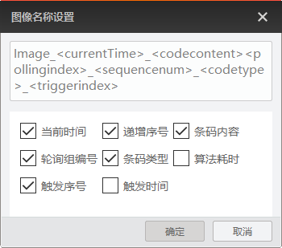

客户端存图
客户端存图是通过IDMVS层面将读码器图像存储到本机PC上。通过菜单栏存图的客户端存图可设置存图规则。
完成参数设置后，读码器取流过程中可通过图像预览区进行抓图，详情参见预览图像章节。
整个客户端存图分为路径设置、抓图、抠图和缓存。
路径设置
路径设置处可设置客户端存图时的存储路径，通过保存路径右侧的选择当前PC的路径即可。
说明
此处设置的保存路径不是抠图的存图路径。
抓图
抓图处可设置图像格式、图像品质、命名规则以及连续抓图模式等参数。
具体参数如下：
- 运行模式使能
-
-
若您无需区分不同运行模式下的存图策略，则无需打开此参数。
-
若您不同运行模式的存图策略需分别设置，则需要打开此参数后先选择对应的运行模式，再完成以下参数的设置。重复多次，完成不同运行模式下各参数的设置。
说明若读码器固件为3.2.0及以上版本，则不区分运行模式，无需设置此参数。
-
- 图像格式
-
可选BMP、RAW或JPG3种格式。其中RAW为裸数据格式。
选择JPG时，还需设置图像质量参数。
- 保存类型
-
可设置图像保存的类型，可选默认、渲染图或默认+渲染图。
- 保存策略
-
可设置保存图像的条件，可选ALL、OK或NG3种。
- 文件命名规则
-
可自定义设置图像名称的命名规则。单击右侧的根据实际情况勾选1个或多个类型，再单击确定即可。类型可选当前时间、递增序号、条码内容、轮询组编号、条码类型、算法耗时、触发序号、触发时间。
说明默认勾选类型的先后顺序即最终命名规则中从前到后的排序。如需调整，可在上方命名规则的可编辑区域调整鼠标位置。

图 1 命名规则 - 连续抓图
-
可设置连续抓图时的运行规则。可选按数目抓图或按时间抓图2种方式。
- 默认存图
-
打开该参数后，IDMVS取流时默认进行存图。
- 自动清图
-
打开该参数后，超过一定时间限制的图像将被自动清除。具体时间通过图片保存时间参数设置。
 根据实际情况勾选1个或多个类型，再单击
根据实际情况勾选1个或多个类型，再单击抠图
抠图处可设置物流场景使用的读码器如何存储抠图的图像。
分享
本页导航